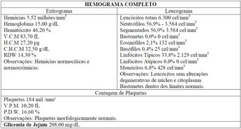
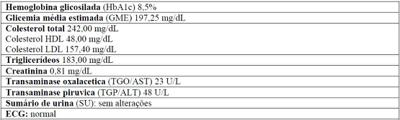
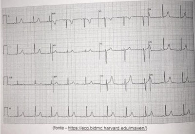
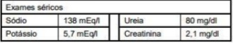
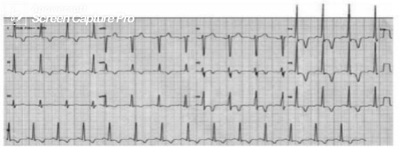

Paciente de 58 anos, portador de HAS, neuropatia periférica e diabetes mellitus tipo II há 10 anos, com controle irregular em uso de metformina, evolui com quadro de edema de MMII há 2 meses. Buscou atendimento médico, e exames complementares realizados mostraram algumas alterações (creatinina 1,8 mg/dL, potássio 4,5 mEq/L – normal: 3,5- 5,0 - clearance de creatinina estável em 46 ml/min, proteinúria 2,5g/d). Paciente está usando enalapril 10mg/dia. Baseado nesse caso, assinale a resposta CORRETA.
Revisar: possível letra faltando em alt C
Paciente de 62 anos com histórico de Infarto Agudo do Miocárdio há 3 anos, tabagista ativo (carga tabágica de 30 anos- maço), refere ser portador de hipertensão, diabetes e possuir crises de gota frequentes, procura atendimento na sua Unidade Básica de Saúde pois necessita um atestado médico para realizar exercício físico. No momento o paciente encontra-se assintomático e refere que trabalha pesado todos os dias, realizando corte de grama e serviços de marcenaria, sem apresentar dispneia ou dor torácica. Está fazendo uso de Enalapril 20 mg a cada 12 horas, Atenolol 50mg ao dia, Sinvastatina 40mg ao dia, Metformina 1 grama a cada 12 horas e AAS 100mg na hora do almoço. Quando questionado sobre o tabagismo ele refere que não deseja parar de fumar pois seus tios todos fumam desde a infância e estão vivos com mais de 80 anos, então ele não acredita nos males do tabagismo. Ao exame físico encontra-se em bom estado geral, com uma pressão arterial de 156x96 mmHg, Frequência cardíaca de 60 bpm e frequência respiratória de 14 ipm. Você solicita exames laboratoriais que revelam: LDL 84 mg/dL; HDL 32 mg/dL; Triglicerídeos 302 mg/dL Hemoglobina Glicada: 7,9% Glicemia de Jejum: 134 mg/dL Ácido Úrico: 8,2 mg/dL Hemograma, função renal, marcadores de lesão hepática e TSH estão normais. Qual a sua conduta para o manejo da Hipertensão do paciente?
Com relação aos betabloqueadores, qual a afirmação correta?
Homem de 76 anos, diagnosticado com insu ciência cardíaca, fração de ejeção reduzida (35%), secundária a isquemia miocárdica, comparece à consulta ambulatorial trazendo M.A.P.A., demonstrando controle pressórico inadequado. Nesse caso, qual a meta pressórica e classes de medicamentos de escolha?
Assinale a alternativa que constitui uma afirmação verdadeira sobre a prevenção primária da hipertensão.
Em relação à Hipertensão Arterial Sistêmica, é correto afirmar:
Um homem de 58 anos de idade, obeso, hipertenso e diabético, em uso de atenolol 25 mg/dia, de hidroclorotiazida 25 mg/dia e de metformina 1.000 mg/dia, comparece a uma consulta de rotina trazendo exame de amostra isolada de urina com microalbuminúria e Holter 24 h com bradicardia sinusal, com frequência cardíaca mínima em vigília igual a 45 bpm, assintomático. No momento da consulta, sua frequência cardíaca é 50 bpm. O médico de família indica a troca do atenolol. Com base nesse caso hipotético, assinale a melhor opção de medicamento entre as alternativas apresentadas a seguir
Paciente de 45 anos, gênero masculino, procura atendimento ambulatorial para seguimento de hipertensão arterial diagnosticada há 2 anos. Faz uso regular de Losartan 50mg/dia e Hidroclorotiazida 25mg/dia. Traz exame da MAPA com média pressórica ao longo do dia de 145x87mmHg. Levando-se em conta que o tratamento adequado desta morbidade é composto por medidas farmacológicas e não farmacológicas, entre suas recomendações comportamentais a este paciente teríamos:
Homem de 59 anos, sedentário, tabagista, hipertenso, em uso de anlodipino 10mg/dia de forma regular, sem história de eventos isquêmicos prévios. Apresenta IMC: 32kg/m2, FC: 82bpm, PA: 160x900mmHg (duas medidas na mesma consulta), e circunferência abdominal = 128cm. Traz os seguintes resultados de exames: glicemia de jejum: 155mg/dL, (anterior anotada no prontuário = 135mg/dl) glicemia pós sobrecarga de dextrosol: 249mg/dL, colesterol total: 263mg/dL, HDL: 35mg/dL e triglicerídeos: 290mg/dL. Ao ser abordado quanto à cessação do tabagismo o paciente recusou: vê no cigarro a única estratégia de controle da ansiedade e não deseja parar de fumar. Nesse caso, a conduta MAIS coerente em relação à hipertensão e hiperglicemia, neste momento, é reforçar a importância do paciente de buscar um estilo de vida saudável e:
Homem, 88a, assintomático, comparece à consulta em Unidade Básica de Saúde para reavaliação clínica com resultados de exames. Antecedentes: hipertensão arterial, intolerância à glicose, doença arterial periférica e osteoartrite de quadril. Medicações em uso: hidroclorotiazida 25mg/dia; losartana 50mg/dia; metformina 850mg2x/dia; carbonato de cálcio 1g/dia; paracetamol 2g/dia e sulfato de glucosamina 1,5mg/dia. Exame físico: bom estado geral, PA=136x82mmHg, FC=80bpm. glicemia jejum=108mg/dL, creatinina=1,4mg/dL, ácido úrico=8,2mg/dL, hemoglobina glicada=7,6%.
Roberto, um homem de 58 anos, é portador de hipertensão arterial, diabetes mellitus e hipotireoidismo. Há cerca de dois meses, ele sofreu um AVE isquêmico, apresentando diminuição de força em dimídio esquerdo, necessitando de auxílio para marcha. Desde que ocorreu o AVEi, Roberto não recuperou completamente a função cognitiva, apresentando dificuldade em compreender fala, acalculia e diminuição da memória de curto prazo. Considerando o caso descrito e seus conhecimentos, julgue o item a seguir. O tratamento adequado da hipertensão arterial com medicamentos de primeira linha (IECA, BRA, bloqueadores de canal de cálcio diidropiridínicos ou diuréticos tiazídicos) reduz o risco de eventos como um AVEi.
A hipertensão arterial sistêmica (HAS) apresenta alta morbimortalidade, com perda importante da qualidade de vida, o que reforça a importância do diagnóstico precoce. O diagnóstico não requer tecnologia so sticada, e a doença pode ser tratada e controlada com mudanças no estilo de vida, com medicamentos de baixo custo e de poucos efeitos colaterais, comprovadamente eficazes e de fácil aplicabilidade na Atenção Básica (AB). Assinale a alternativa correta sobre o rastreamento da HAS.
O tratamento de hipertensão arterial sistêmica tem como objetivo a diminuição do risco cardiovascular do paciente. O principal determinante na busca desse objetivo é
Considere um homem de 38 anos, branco, cujos pais e 1 irmão (mais velho) são portadores de hipertensão arterial. Ele procura uma unidade de saúde porque lhe foi solicitado atestado médico para praticar exercícios físicos, pois na avaliação inicial na academia, há 2 semanas, sua pressão arterial foi medida e estava 17 por 10 (sic). Nega qualquer sintoma na anamnese. No exame físico, seu peso era 74 Kg, altura 173 cm e a pressão arterial (média de 3 determinações) de 166/104 mmHg e nenhuma outra anormalidade. Qual das condutas abaixo é a adequada para a pessoa em questão?
Conforme as Diretrizes Brasileiras de Hipertensão Arterial, um dos objetivos específicos do tratamento do paciente hipertenso é obter o controle pressórico, alcançando-se a meta de pressão arterial previamente estabelecida. Tal meta deve ser definida individualmente, sempre se considerando a idade e a presença de doença cardiovascular ou de seus fatores de risco. Quanto a esse tema, assinale a alternativa correta.
Mulher, 56 anos de idade, hipertensa há 8 anos, apresenta níveis de PA mensurados em sua residência acima de 140/90 mmHg. Está em uso de losartana 100 mg/dia, amlodipina 10 mg/dia e clortalidona 25 mg/dia. Não há evidências de má aderência. Exame físico: PA = 162/98 mmHg; FC = 82 bpm; IMC = 24,2 kg/m2. Exames laboratoriais: creatinina = 0,82 mg/dL; potássio = 4,2 mEq/L; urina 1 normal; USG Doppler das artérias renais normal. Outras causas de hipertensão secundárias foram excluídas. Qual é a estratégia terapêutica mais adequada para o controle pressórico desta paciente?
Mulher de 50 anos, apresenta aferições de pressão arterial (PA) sistólica na faixa de 160 a 170mmHg e PA diastólica de 80 a 95mmHg. O exame clínico é normal, exceto por B4, como bulha acessória. O eletrocardiograma (ECG) indica aumento da amplitude da onda R em precordiais esquerdas, índice de Morris aumentado e padrão do segmento ST tipo “ modificações de estilo de vida e dieta hipossódica, a melhor conduta será:
Paciente com 44 anos do sexo feminino de raça negra vem em retorno para avaliação de exames e acompanhamento de pressão arterial alterada, não fuma, faz uso de álcool aos nais de semana. Na consulta verificado pressão arterial de 142 x 92 mmHg, além de IMC de 38, Resultados de exames: Glicemia de jejum: 109 mg/dl, colesterol total: 207 mg/dl, HDL colesterol: 58 mg/dl, triglicérides: 190 mg/dl, creatinina: 1,1 mg/dl, sódio: 142 mEq/l, potássio: 4,9 mEq/l, ácido úrico: 5,1 mg/dl, urina tipo 1: sem alterações. Valores de referência: Glicemia 70 - 100 mg/dl Colesterol total: < 200 mg/dl HDL Colesterol: 40-60 mg/ dl Triglicérides: < 150 mg/dl Creatinina: 1,3 mg/dl Sódio: 135 - 145 mEq/l Potássio: 3,5 - 5,5 mEq/l Ácido Úrico: 4,0 - 7,0 mg/dl Qual tratamento é o mais indicado?
Dona Marli queixa-se de edema de membros inferiores após iniciar uso de medicamento para controlar sua pressão arterial e procura atendimento para realizar a troca do remédio, pois sente-se muito incomodada. O fármaco em questão deve ser
Sobre o carvedilol, assinale a alternativa correta.
A monoterapia pode ser a estratégia anti-hipertensiva inicial para pacientes com hipertensão arterial
Considerando os esquemas preferenciais de associações de medicamentos anti-hipertensivos, de acordo com mecanismos de ação e sinergia, a mais recente diretriz brasileira de hipertensão classifica as associações como preferenciais, possíveis, mas menos testadas e não recomendadas. Assinale a alternativa que contém uma associação possível, mas menos testada.
Considere um paciente de 56 anos que comparece no seu consultório trazendo um MAPA e um MRPA que mostram alteração da pressão arterial. Os registros mostram picos hipertensivos superiores a 1500X90 mmHg. Para esse paciente, além das mudanças no estilo de vida, você considera iniciar uma medicação anti-hipertensiva. Dentre as opções abaixo, qual você NÃO iniciaria para esse paciente:
Em relação à utilização das drogas inibidoras da enzima de conversão da angiotensina I (Inibidores da ECA), é INCORRETO afirmar que:
Paciente do sexo masculino, 48 anos, sobrepeso, com dislipidemia, hipertensão primaria e diabetes, vem a consulta de rotina na unidade básica de saúde, com MRPA (Monitorização residencial de pressão arterial), com pressão média acima do traçado. Como meta no plano terapêutico, este paciente já faz uso de dois anti-hipertensivos, antes de instituir mudanças farmacológicas deve-se rever:
Sobre os efeitos adversos de fármacos anti-hipertensivos: I-Diuréticos tiazídicos podem apresentar hiperuricemia, aumento de crises de gota e hipocalemia. II-Bloqueadores centrais podem cursar com sedação, boca seca e rebote na retirada. III-Diuréticos poupadores de potássio não cursam com hiperpotassemia. IV-Bloqueadores do canal de cálcio como o Diltiazem podem apresentar como efeito adverso: constipação, rubor facial e diminuição da contratilidade miocárdica. Estão corretas as assertivas:
Um paciente diabético e hipertenso está em fase de recuperação de infarto do miocárdio e apresenta um bloqueio átrio- ventricular do segundo grau. De outras comorbidades, ele refere um passado de angioedema e gota. Qual das drogas anti- hipertensivas abaixo seria a ideal para esse paciente?
Paciente de 55 anos, masculino, procura atendimento ambulatorial por di culdade no manejo de seus níveis pressóricos. Reporta ser hipertenso há 10 anos em uso regular de clortalidona 25mg/dia, enalapril 20mg/dia e anlodipina 10mg/dia. Nega outros fármacos, tabagismo e comorbidades. Recentemente realizou exames de US Doppler de carótidas, teste ergométrico e exames laboratoriais sem alterações. Exame físico sem achados alterados exceto por PA= 155/92 mmHg em membro superior direito. Segundo o paciente, tais valores são semelhantes aos aferidos em domicílio. Neste caso, qual deve ser a abordagem farmacológica a ser instituída?
Inibidores do sistema reninaangiotensinaaldosterona Paciente masculino de 60 anos, portador de hipertensão arterial sistêmica, diabetes mellitus, hipotireoidismo, obesidade, nefrolitíase e doença renal crônica com taxa de ltração glomerular estimada por CKD-EPI de 45 ml/min e com albuminúria de 300mg/g de creatinina. Sobre esse caso, responda quais são os medicamentos com benefício em retardar progressão da doença renal crônica para estádio 5, dentre as opções a seguir.
Uma paciente de 65 anos de idade compareceu à consulta com queixa de polidipsia, polifagia, poliúria e perda ponderai de 5 kg nos últimos três meses. Queixa-se também de humor deprimido, anedonia e avolia. Tabagista, possui diagnósticos de hipertensão arterial sistêmica (HAS), doença pulmonar obstrutiva crônica (DPOC) e depressão. Faz uso de amitriptilina 25 mg à noite, enalapril 10 mg, 2 vezes ao dia, hidroclorotiazida 25 mg, 1 vez ao dia e salbutamol inalatório sob demanda. Ao exame físico apresenta mancha hiperpigmentada em região de dobra cervical, aveludada à palpação. Observou-se PA =160 mmHg x 110 mmHg em ambos os membros superiores. Foi realizada medida de HGT, com resultado de 320 mg/dL. Com base nesse caso clínico e nos conhecimentos médicos correlatos, julgue o item a seguir. Uma boa opção, como terceiro fármaco anti-hipertensivo, seria um bloqueador dos receptore: de angiotensina II (BRA), como a losartana, visto que diminuiria o risco cardiovascular, além de auxiliar na nefroproteção.
Uma paciente de 65 anos de idade compareceu à consulta com queixa de polidipsia, polifagia, poliúria e perda ponderai de 5 kg nos últimos três meses. Queixa-se também de humor deprimido, anedonia e avolia. Tabagista, possui diagnósticos de hipertensão arterial sistêmica (HAS), doença pulmonar obstrutiva crônica (DPOC) e depressão. Faz uso de amitriptilina 25 mg à noite, enalapril 10 mg, 2 vezes ao dia, hidroclorotiazida 25 mg, 1 vez ao dia e salbutamol inalatório sob demanda. Ao exame físico apresenta mancha hiperpigmentada em região de dobra cervical, aveludada à palpação. Observou-se PA =160 mmHg x 110 mmHg em ambos os membros superiores. Foi realizada medida de HGT, com resultado de 320 mg/dL. Com base nesse caso clínico e nos conhecimentos médicos correlatos, julgue o item a seguir. Pode-se associar um betabloqueador, como o propranolol, ao tratamento anti-hipertensivo.
Uma paciente de 65 anos de idade compareceu à consulta com queixa de polidipsia, polifagia, poliúria e perda ponderai de 5 kg nos últimos três meses. Queixa-se também de humor deprimido, anedonia e avolia. Tabagista, possui diagnósticos de hipertensão arterial sistêmica (HAS), doença pulmonar obstrutiva crônica (DPOC) e depressão. Faz uso de amitriptilina 25 mg à noite, enalapril 10 mg, 2 vezes ao dia, hidroclorotiazida 25 mg, 1 vez ao dia e salbutamol inalatório sob demanda. Ao exame físico apresenta mancha hiperpigmentada em região de dobra cervical, aveludada à palpação. Observou-se PA =160 mmHg x 110 mmHg em ambos os membros superiores. Foi realizada medida de HGT, com resultado de 320 mg/dL. Com base nesse caso clínico e nos conhecimentos médicos correlatos, julgue o item a seguir. O fumo é um fator de risco totalmente evitável de doença e morte cardiovasculares, e seu enfrentamento precisa ser feito.
Mulher, 72a, procura atendimento médico referindo dispneia aos grandes esforços habituais. Exame físico: PA= 168x82 mmHg, FC= 88 bpm. ECG: ritmo sinusal e alterações inespecí cas da repolarização ventricular. Ecocardiograma transtorácico: aumento discreto de átrio esquerdo, ventrículo esquerdo com diâmetros normais e espessuras do septo intraventricular e parede posterior de VE aumentadas. Fração de ejeção (Simpson)= 71%. Relaxamento diastólico anormal grau I. A ESTRATÉGIA TERAPÊUTICA ANTIHIPERTENSIVA PREFERENCIAL NESTE CASO É:
Revisar: possível letra faltando em enunciado
Gerson, 49 anos, tem diagnóstico de hipertensão arterial sistêmica (HAS), sem outras comorbidades e sem história pessoal de eventos cardiovasculares. Tem um monitoramento ambulatorial da pressão arterial (MAPA) com médias pressóricas de 158/96 e ausência de descenso noturno da pressão arterial. Está em uso de hidroclorotiazida 25 mg/dia, de forma regular. Baseado, também em seus exames laboratoriais, você calcula um risco cardiovascular intermediário de 15% (AHA, 2019), para os próximos 10 anos. Sobre o manejo terapêutico de Gerson, marque a alternativa correta, segundo o “2 Guideline on the Primary Prevention of Cardiovascular Disease”
Há diversas classes de anti-hipertensivos disponíveis. Assinale a alternativa em que foi demonstrado que o uso de uma droga anti-hipertensiva específica melhora os desfechos da doença.
Relacione a Coluna 1 à Coluna 2, associando a classe de anti-hipertensivos aos eventos adversos possíveis. Coluna 1 1. Hiperpotassemia. 2. Broncoespasmo. 3. Edema de membros inferiores. 4. Hiperglicemia. Coluna 2 ( ) Ramipril. ( ) Anlodipino. ( ) Atenolol. ( ) Hidroclorotiazida. A ordem correta de preenchimento dos parênteses, de cima para baixo, é:
Paciente com 49 anos do sexo masculino em consulta para avaliação de exames e acompanhamento de pressão arterial alterada, tem antecedente de gota. Na consulta, verificou-se pressão arterial de 152 x 90 mmHg, além de IMC de 38. Resultados de exames: glicemia de jejum: 88 mg/dl, colesterol total: 270 mg/dl, HDL colesterol: 94 mg/dl, triglicérides: 197 mg/dl, creatinina: 1,3 mg/dl, sódio: 142 mEq/L potássio: 4,7 mEq/L. ácido úrico: 9.2 mg/dl, urina tipo 1: sem alterações significativas. Valores de referência: Glicemia: 70-99 mg/dl Colesterol total: < 200 mg/dl HDL Colesterol: 40-60 mg/d Triglicérides: <150 mg/dl Creatinina: < 1,3 mg/dl Sódio: 135-145 mEq/L Potássio: 3,5-5,5 mEq/L Ácido úrico: 4,0-7,0 mg/dl Con rmado o diagnóstico de hipertensão arterial e com base nas características clínicas e resultados dos exames, qual a classe de anti-hipertensivo você indicaria preferencialmente?
Mulher negra de 24 anos, casada há um ano, procurou pela primeira vez a unidade de saúde ambulatorial para uma consulta clínica, por apresentar atraso menstrual de três semanas. O médico avaliou a paciente e, ao exame físico, veri cou PA = 140 x 88 mmHg, utilizando-se manguito convencional, e MC = 33 kg/m2. Foi diagnosticada hipertensão arterial e, por isso, o médico prescreveu captopril 25 mg, três vezes ao dia. Considerando o diagnóstico, pode-se afirmar que ele está:
É uma droga utilizada no tratamento de hipertensão arterial sistêmica que deve ser evitada em paciente com diagnóstico de gota:
Em relação ao tratamento da hipertensão arterial sistêmica, qual é o diurético tiazídico de escolha dentre todas as drogas dessa classe, tendo em vista seu maior tempo de meia-vida plasmática e sua maior evidência cientí ca na redução de eventos cardiovasculares?
Revisar: possível letra faltando em enunciado
Qual dos anti-hipertensivos abaixo é a melhor escolha para o grupo dos afrodescendentes?
Homem de 46 anos de idade está em acompanhamento no ambulatório por hipertensão arterial sistêmica. Não se identi caram fatores de risco cardiovascular à investigação. Orientada mudança de estilo de vida com baixa aderência, principalmente por conta de crises frequentes de artrite gotosa que têm impedido realização de atividade física regular. Utiliza colchicina nas crises. Ao exame clínico apresenta pressão arterial de 154x98mmHg, sem outras alterações. Qual é a medicação melhor indicada para controle pressórico?
Em relação ao tratamento com diuréticos para hipertensão arterial sistêmica, é correto afirmar que
Você foi designado a estabelecer um protocolo de uso prioritário de anti-hipertensivos na Unidade Básica de Saúde. Dessa forma, listou indicações prioritárias dos fármacos aos hipertensos com as seguintes condições associadas,
Paciente masculino, 65 anos, apresenta diagnóstico de hipertensão arterial há 8 anos, fazendo uso regular de enalapril e anlodipino. Há uma semana passou a apresentar queixa de palpitações e fadiga fácil, tendo sido solicitado um eletrocardiograma, que mostrou taquicardia supraventricular, FC= 135 bpm, sem sinais de isquêmica miocárdica. O exame físico do paciente é normal, exceto pela taquicardia, PA - 126X80 mmHg. Assinale dentre as alternativas abaixo, a melhor conduta neste caso:
Constitui contraindicação absoluta ao uso de betabloqueadores:
Paciente do sexo masculino, 32 anos, sabidamente hipertenso há 1 ano, em uso de Losartana 50 mg 1 comprimido diariamente pela manhã, comparece a Unidade Básica de Saúde em retorno para mostrar a seu Médico de Família e Comunidade alguns exames que foram solicitados na consulta anterior. Nega tabagismo, mas a rma etilismo social. É sedentário, não realiza dieta, mas refere que tem reduzido a ingesta de sal. Atualmente vem apresentando como queixas poliúria e astenia. Ao exame físico: PA=130/80 mmHg; ausculta cardiopulmonar sem alterações; peso=100 kg; altura=1,72; circunferência abdominal=105cm. Traz como resultados dos exames os demonstrados a seguir: Fonte: Elaborado para a questão. Com base nas informações apresentadas, assinale a alternativa


Um paciente do sexo masculino com 40 anos de idade, previamente assintomático, procura uma UBS para avaliar quadro de hipertensão arterial. Nega tabagismo e etilismo. É sedentário. Não tem antecedentes familiares de doença cardiovascular. Ao exame físico, apresenta-se sem alterações, exceto por duas medidas de pressão arterial realizadas em consultas distintas. Ambas mostraram os seguintes valores: 145 mmHg × 95 mmHg. Tendo como base a 7.ª Diretriz Brasileira de Hipertensão Arterial, assinale a opção que apresenta a conduta inicial mais adequada a esse caso clínico.
Mulher, 60 anos de idade, é acompanhada na Unidade de Saúde da Família (USF) por arterial sistêmica. Na primeira visita à USF, há cerca de 6 meses, a PA estava em 182x100mmHg. Atualmente, assintomática. Nega outras comorbidades. Em uso regular de metformina 850mg duas vezes ao dia, losartana 50mg de 12/12h e anlodipina 10mg ao dia, há cerca de 6 meses. Ao exame físico, apresenta-se em bom estado geral, com FC: 70bpm, PA: 166x96mmHg em ambos os membros superiores e glicemia capilar de 110mg/dL. Pulsos palpáveis e simétricos. Exame segmentar sem alterações. Traz monitorização residencial da pressão arterial, com PAS entre 140 e 172mmHg e PAD entre 90 e 96mmHg. Indique a conduta mais adequada para otimizar o esquema anti-hipertensivo dessa paciente.
Paciente do sexo feminino, 49 anos, portadora de hipertensão sem uso atual de medicação, procura ambulatório de clínica médica com queixa de dispneia aos grandes esforços habituais. Ao exame físico apresentava PA = 168 x 85 mmHg, FC = 77 bpm e ausculta cardíaca normal. Realizou um eletrocardiograma de repouso que demostrava ritmo sinusal e alterações inespecíficas difusas da repolarização ventricular. Assinale a alternativa que contém a estratégia terapêutica anti-hipertensiva mais adequada, segundo as diretrizes atuais.
Homem de 58 anos, tabagista, obeso, com história prévia de hiperuricemia, hipertensão arterial sistêmica (HAS) e doença arterial coronariana (DAC) sintomática, vem à consulta ambulatorial de rotina, fazendo uso de antiagregante plaquetário, estatina, atenolol 25 mg/dia, hidroclorotiazida 12,5 mg/dia e losartana 100 mg/dia. Ele relata que nos últimos 4 meses apresentou 3 episódios compatíveis com podagra e que sua pressão arterial tem se mantido acima de 150/100 mmHg na maior parte das aferições. Para a otimização do tratamento anti-hipertensivo e visando à diminuição do risco cardiovascular e de lesões em órgão alvo, a indicação de ajuste da medicação desse paciente é:
O tratamento não medicamentoso da hipertensão arterial envolve modi cações no peso corporal e na ingestão alimentar e, segundo a Sociedade Brasileira de Cardiologia, uma recomendação é.
Com relação ao tratamento medicamentoso da hipertensão arterial, assinale a alternativa incorreta.
Um paciente de 48 anos procura a unidade básica de saúde para orientações. Ele está preocupado pois seu pai faleceu de infarto agudo do miocárdio aos 49 anos e teme que isso aconteça com ele também. Ele refere que fuma desde os 18 anos, mas que deseja parar só não sabe quando nem como fazer. Recentemente tem aumentado progressivamente sua carga tabágica, fumando agora quase uma carteira e meia por dia (30 cigarros), tem fumado o primeiro cigarro logo que acorda e precisa sair do seu trabalho diversas vezes para fumar na rua. Ficou preocupado, pois recentemente apresentou uma fratura de membro inferior e ainda assim fumava enquanto estava acamado em casa. Seu exame físico demonstra circunferência abdominal de 120cm, pressão arterial de 182x86 mmHg e frequência cardíaca de 92bpm. O paciente retorna para uma reavaliação com os exames laboratoriais que demonstram: Glicemia de jejum=129 mg/dL, Creatinina=1,36 mg/dL, Colesterol total=287 mg/dL, HDL=39 mg/dL, Trig=167 mg/dL. No exame físico, a pressão arterial encontra-se em 176x84mmHg. Considerando as drogas disponíveis no sistema público de saúde, qual seria a terapia farmacológica inicial ideal para a hipertensão desse paciente?
Entre as classes farmacológicas em uso para tratamento anti-hipertensivo estão os diuréticos. Com respeito aos diuréticos na Hipertensão Arterial, considere as afirmações abaixo. I - Os diuréticos tiazídicos, como a Hidroclorotiazida, têm ação vasodilatadora. II - Os diuréticos de alça, como a furosemida, são mais apropriados no tratamento de hipertensos com função renal preservada. III - A hipocalemia é uma complicação decorrente do uso de alguns, mas não de todos os diuréticos usados no tratamento de Hipertensão Arterial. Selecione a opção correta.
Em relação ao tratamento da hipertensão arterial, é INCORRETO afirmar que:
Mulher de 38 anos de idade é avaliada em consulta de rotina. Ela não faz exercício físico, come sanduíche e refrigerante 3 vezes por semana (fast-food), trabalha em tempo integral em um emprego de alto estresse, fuma 20 cigarros por dia e ingere 1 taça de vinho tinto (250 mL) na maioria das noites. Ela é mãe de dois lhos e não há antecedentes pessoais ou familiares relevantes, Exame físico: PA: 120 x 80 mmHg, FC: 75 bpm e IMC: 25,5 kg/m²; o restante do exame clínico é normal. Qual a intervenção que tem a maior chance de causar um impacto positivo na saúde dessa paciente?
Homem de 57 anos de idade é atendido em consulta de rotina. Ele tem antecedentes de diabete melito e hipertensão arterial e nega demais patologias. Nos últimos 6 meses, os valores de pressão arterial têm cado entre 150 x 100 e 168 x 105 mmHg. Exame físico na consulta: PA: 160 x 100 mmHg (MMSS direito e esquerdo). Exames séricos: hemograma normal; glicemia de jejum: 112 mg/dL; hemoglobina glicada: 5,9%; ureia: 38 mg/dL, creatinina: 1,1 mg/dL, sódio: 138 mEq/L e potássio: 4,2 mEq/L. Urina: normal. Eletrocardiograma: sem alteração relevante. Além de orientações dietéticas e exercício físico, nesse momento, a conduta de escolha é:
Revisar: possível letra faltando em enunciado
Homem de 55 anos é diagnosticado há 1 semana com hipertensão arterial estágio 1, com risco cardiovascular aumentado (doença renal crônica e diabetes mellitus). De acordo com a 7ª Diretriz Brasileira de Hipertensão Arterial, além da terapia não medicamentosa, qual a conduta indicada?
Homem, 51a, retorna à Unidade Básica de Saúde assintomático, com exames. Exame físico: PA= 138x88 mmHg, IMC= 26 kg/m². Glicemia= 90 mg/dL; triglicérides=182 mg/dL e colesterol total= 195 mg/dL. A CONDUTA É:
Qual dos anti-hipertensivos abaixo é o de escolha para o idoso?
Inibidores do sistema reninaangiotensinaaldosterona Homem de 58 anos, fumante, hipertenso, com intolerância à glicose e história familiar de diabetes mellitus, tem estenose de cerca de 50% das carótidas internas. Faz uso de 100mg de losartan e sua pressão arterial está em 150 x 90mmHg. O médico decide associar outra droga ao esquema anti-hipertensivo. Nesse caso, a droga que deve ser evitada, pois pode aumentar o risco de mortalidade e de infarto do miocárdio, em associação ao losartan, é o(a):
Betabloqueadores Analise as assertivas abaixo sobre o tratamento da hipertensão arterial: I - Inibidores da enzima conversora (IECA) ou bloqueadores de receptores da angiotensina (BRA) são drogas preferenciais em hipertensos com diabetes, nefropatia e/ou disfunção ventricular. II - Nifedipina é boa opção em hipertensos com doença coronariana. III - Nos pacientes em uso de IECA que desenvolvem hiperpotassemia ou perda de função renal, pode-se trocar a droga por BRA. IV - Betabloqueadores e tiazídicos se associam a aumento da incidência de diabetes e disfunção erétil. Quais estão corretas?
Paciente obeso e sedentário realizou três medidas da pressão arterial no mesmo dia, sendo a primeira 162/92mmHg, a segunda 146/90mmHg e a terceira 140/88mmHg. A conduta terapêutica, em relação às aferições observadas da pressão arterial, é:
Com respeito aos efeitos colaterais de antihipertensivos, considere as afirmativas abaixo. I – Inibidores de enzima conversora de angiotensina e bloqueadores do receptor ATI da angiotensina II podem ter como efeito colateral de seu uso a elevação do potássio plasmático. O mecanismo envolve o aumento de secreção de aldosterona. II – Bloqueadores adrenérgicos do tipo beta podem ter como efeito colateral o agravamento de distúrbios de condução intraventricular. O mecanismo envolve a dinâmica do potencial de ação dos cardiomiócitos. III – Bloqueadores de canais de cálcio dihidropiridínicos podem ter como efeito colateral importante edema de membros inferiores. O mecanismo envolve o controle do fluxo das arteríolas, esfíncteres précapilares e capilares. Qual a alternativa abaixo que contempla todas as considerações corretas.
Os medicamentos diuréticos da classe dos tiazídicos são medicamentos importantes no tratamento da hipertensão arterial sistêmica. Apesar dos benefícios comprovados, esses medicamentos podem apresentar alguns efeitos colaterais que devem ser monitorados especialmente na população idosa. São todos efeitos colaterais associados ao uso dos diuréticos tiazídicos, EXCETO:
Paciente do sexo masculino, 65 anos, sem queixas no momento da consulta, diabético em seguimento há 5 anos com avaliação de órgãos-alvo sem alterações, comparece em retorno de rotina trazendo exames solicitados previamente, mostrando alterações no colesterol total cujo resultado é de 268 mg/dL, além de azotemia que o paciente não possuía antes, estimando-se um clearance de creatinina de 53 mL/min/m². Ao exame físico o paciente mostra-se com sobrepeso, normocorado, normocárdico, eupneico, hidratado, sem edemas aparentes, pressão arterial de 148 x 95 mmHg, glicemia capilar de 178 mg/dL; sem outras alterações. Com base no quadro apresentado pelo paciente, assinale a conduta correta.
Biguanida metf ormina Antônia é uma senhora negra que tem 40 anos apresenta hipertensão e diabetes em uso de captopril 25 mg 1 x ao dia e metformina 850 mg antes do almoço. Nega eventos cardiovasculares prévios, tabagismo e não apresenta lesões em órgão alvo. Antônia relata boa adesão à dieta, entretanto, apresenta di culdade de realizar atividade física em virtude de sua vida pro ssional. Ela vem à consulta médica com exames solicitados na visita anterior. Hemograma sem alterações, triglicerídeos de 320 mg/dl, glicemia de jejum 188 mg/dl, hemoglobina glicosilada 9,0%, colesterol total de 210 mg/dl, HDL de 65mg/dl e creatinina de 0,9 mg/dl. Ao exame físico, a pressão arterial foi de 145/90 mmHg. A partir da análise destes dados, escolha a alternativa com a melhor opção terapêutica, que deve ser a de orientar:
Paciente do sexo masculino, 45 anos, assintomático, comparece à consulta de rotina e foi verificada pressão arterial de 180x90mmHg em 3 aferições durante o período. Segundo a 7ª Diretriz Brasileira de Hipertensão, é recomendado que:
Mulher, 66 anos de idade, diabética tipo II, procura o seu consultório com PA = 140x90 mmHg. Exames laboratoriais: taxa de filtração glomerular estimada em 38 ml/min por 1,73m² e proteinúria de 1,9g/24h. Qual é a conduta mais adequada?
Cardiologia Medidas não farmacológicas como cessação do tabagismo, perda de peso, atividade física regular, controle dietético e de fatores de risco estão indicadas para todos os pacientes com DM portadores de doença arterial coronariana (DAC). Nesse contexto, apenas não podemos concordar que:
Homem, 45 anos, diabético, encontra-se assintomático, sem alterações no exame físico e com PA de 140 x 92 mmHg. Exames laboratoriais: creatinina = 2,0 mg/dl (taxa de ltração glomerular estimada 40 ml/min), ureia = 80 mg/dl, Na = 139 mmol/L, K = 4,8 mmol/L, glicemia = 190 mg/dl, hemoglobina glicada = 8,4%, relação albumina/creatinina urinária = 1000 mg/g (VR < 30 mg/g). Foi iniciado captopril 25 mg a cada 8 horas. Qual é o exame indispensável a ser solicitado para o próximo retorno?
Com relação aos hipotensores, assinale a alternativa correta.
Em relação ao tratamento da hipertensão arterial, é correto afirmar que
A definição da escolha da droga mais adequada a ser usada no tratamento inicial de hipertensão primária leve, em indivíduo de 60 anos sem outras comorbidades, deve priorizar a sua capacidade de
Considerando-se os efeitos adversos raros de anti-hipertensivos, assinale a alternativa em que a associação entre fármaco representante e o respectivo efeito está INCORRETA.
Assinale a melhor opção para o manejo farmacológico de pacientes idosos com hipertensão arterial sistólica isolada.
Homem de 51 anos de idade procura o clínico relatando aumento dos níveis pressóricos, mesmo estando assintomático e calmo, trazendo à consulta o medidor digital de pressão automático (braço), com registro de medidas elevadas (a maior de 166x104mmHg). Apresenta histórico familiar de infarto (mãe enfartou aos 58 anos), pratica atividade física de maneira irregular, não utiliza medicamentos e adota dieta inadequada. Ao exame físico, apresentou: PA 164x102 mmHg; FC 80 bpm; IMC: 28 kg/m²; auscultas cardíaca e pulmonar normais; ausência de sopro abdominal; pulsos presentes e simétricos; restante sem alterações. Realizou exames que apresentaram os seguintes resultados: glicemia 96 mg/dL; Hb glicada 5,6 % ; colesterol total 248 mg/dL; HDL 38 mg/dL; LDL 180 mg/dL; TG 150 mg/dL; creatinina 0,7 mg/dL; K 4,0 mEq/L; Na 141 mEq/L; ácido úrico 4,8 mg/dL; TSH 2,6 uM/L; EAS normal e eletrocardiograma sem alterações. Foram realizadas orientações sobre as mudanças no estilo de vida e em relação ao tratamento medicamentoso da pressão arterial. Diante do caso apresentado e conforme a VII Diretriz Brasileira de Hipertensão Arterial, a conduta mais adequada é:
Homem de 45 anos com diabetes tipo II apresenta tensão arterial 145/90 e 150/95 mmHg em duas medidas em ocasiões diferentes. A melhor terapia inicial é:
O uso abundante de diuréticos pode acarretar:
Homem, 50 anos, portador de hipertensão arterial sistêmica e diabetes melito, comparece a consulta ambulatorial médica. Está assintomático e sua pressão arterial é de 148 x 102 mmHg, FC = 70 bpm. Exames laboratoriais mostram hemograma normal, glicemia = 160 mg/dl, hemoglobina glicada = 8,4%, colesterol total = 20 mg/dl, HDL = 30 mg/dl e triglicerídeos = 250 mg/dl; bioquímica normal; albuminúria = 190 mg/g. Doppler de carótidas com placa na carótida comum direita = 90%. Está em uso de losartana 50 mg/dia, metformina 2000 mg//dia e sinvastatina 20 mg/dia. Com base na VII Diretriz de Hipertensão da Sociedade Brasileira de Cardiologia, pode-se afirmar que:
Homem, 45 anos de idade, sem antecedentes conhecidos, em consulta de retorno em Unidade Básica de Saúde devido a pressão arterial elevada. Na consulta anterior, registrado pressão arterial (PA) = 168 x 100 mmHg, sem sintomas, realizadas orientações de medidas não farmacológicas para controle pressórico. Retorna hoje em bom estado, mantém-se assintomático, frequência cardíaca = 88 batimentos/minuto, PA = 166 x 104 mmHg. Semiologia geral, cardíaca, pulmonar abdominal e de membros sem alterações. Possui os seguintes exames complementares, solicitados na consulta anterior: fundo de olho: retinopatia hipertensiva grau 1. Urina tipo 1 ou sedimento urinário: densidade 1020, pH 5,0, proteínas 1+, hemácias 0 por campo. Sangue - Creatinina Sérica: 0,82 mg/dL, Ureia: 34 mg/dL, Na: 137 mEq/L, K: 4,9 mEq/L. Eletrocardiograma reproduzido a seguir. Qual deve ser a terapia farmacológica para este paciente nesta consulta?

Homem, 64 anos de idade, deu entrada no pronto-atendimento do Hospital Universitário de Londrina com queixas de fraqueza muscular que dificultava a deambulação. Refere ainda que tem sentido “algumas palpitações ”. Disse que é hipertenso e faz uso de enalapril 20 mg de 12/12 horas, aldactone 100 mg 1x por dia e hidroclorotiazida 25 mg 1x por dia. Refere que o cardiologista que o acompanha disse que ele tem “o coração e os rins muito fracos”. Diante dessas informações, assinale a alternativa CORRETA.
Mulher, obesa, de 49 anos, hipertensa e dislipidêmica, chega para consulta médica. Apresenta Triglicerídeos 186mg/dL; LDL 158 mg/dL; Glicemia 118mg/dL e na consulta PA: 170 x 100mmHg. Qual estágio da hipertensão, quando deve ser iniciada a terapia medicamentosa, qual a meta da pressão arterial e a melhor conduta terapêutica, segundo a sétima diretriz brasileira de hipertensão arterial?
Em relação aos medicamentos com ação anti-hipertensiva, qual dos medicamentos abaixo é classificado como antagonista dos receptores alfa-1 pós-sinápticos?
Com relação ao tratamento medicamentoso da hipertensão arterial, é INCORRETO afirmar que:
Paciente do sexo masculino, 48 anos, acompanha regularmente em UBS, onde foi diagnosticado com Hipertensão Arterial Sistêmica. Já está realizando modi cações de estilo de vida e agora será iniciada terapia medicamentosa. O paciente encontra-se preocupado com os possíveis efeitos colaterais dos fármacos anti-hipertensivos. Assinale a associação correta entre o medicamento e seus possíveis efeitos colaterais.
Sobre o tratamento medicamentoso da hipertensão arterial, é CORRETO afirmar, EXCETO:
Homem negro, de 45 anos, com diagnóstico recente de hipertensão arterial, com diversas medidas de PA, em geral em torno de 160/100 mmHg a 170/110 mmHg. Sem comorbidades. Assinale o tratamento farmacológico recomendado:
Considere os seguintes anti-hipertensivos: Inibidor da Enzima Conversora da Angiotensina (IECA), Bloqueador do Receptor da Angiotensina II (BRA); Antagonista dos Canais de Cálcio (ACC), betabloqueador, vasodilatador arterial e diurético. A combinação mais potente é?
Qual dos anti-hipertensivos abaixo tem como efeito colateral angioedema?
No tratamento da hipertensão arterial, a associação do inibidor da enzima conversora de angiotensina com o bloqueador do receptor de angiotensina II
O losartan, além de atuar como bloqueador de receptores de angiotensina II, possui ação modesta como:
Homem de 52 anos de idade está em seguimento por hipertensão arterial sistêmica. Durante a avaliação inicial identificou-se insu ciência arterial periférica e insu ciência renal crônica não dialítica. Realiza controle domiciliar com aparelho automático, apresentando medidas sempre acima de 150 x 90 mmHg. Está em uso regular de hidroclorotiazida em dose máxima. No exame clínico: pressão arterial = 160 x 102 mmHg; pulso = 52 bpm. Pulso tibial anterior e pulso pedioso ambos ausentes à esquerda; pulso poplíteo diminuído à esquerda. Demais pulsos periféricos normais. Sem outras alterações de exame clínico. Qual é o anti-hipertensivo de escolha para o caso?

Homem de 76 anos com história prévia de diabetes mellitus tipo 2 e hipertensão arterial é atendido para controle ambulatorial. Sua pressão arterial é 150/85mmHg e a creatinina sérica encontra-se em 1,4mg/dl. O exame de urina apresentou proteinúria 2+, mas não havia cilindrúria. Sua medicação atual inclui hidroclorotizaida e atenolol. Qual agente anti- hipertensivo permitiria um controle melhor da pressão arterial e preservaria a função renal por mais tempo neste paciente?
Uma paciente idosa portadora de diabetes mellitus tipo II e hipertensão arterial, em uso de enalapril e atenolol, vinha com sua pressão fora do alvo, variando entre 160 x 110 mmHg e 190 x 120 mmHg, assintomática. Procurou a emergência com sonolência e desorientação dois dias após seu médico acrescentar nova medicação para controle da pressão. Os exames laboratoriais mostravam: glicemia = 128 mg%; ureia = 15 mg%; creatinina = 0,6 mg%; sódio = 118 mEq/L; potássio = 4,1 mEq/L; bicarbonato = 25 mEq/L; ácido úrico = 2,5 mg%. Entre as drogas citadas abaixo, a que deve ter sido prescrita para essa paciente é a:
A prevalência de hipertensão arterial primária na faixa etária adulta ultrapassa 30% em algumas populações, tornando-se uma das doenças crônicas mais prevalentes da humanidade nos dias atuais. Considerando essa assertiva, assinale a alternativa CORRETA.
Paciente do sexo masculino, 50 anos, obeso, diabético tipo 2, com HDL baixo e função renal normal, vem mantendo pressão arterial de 145 x 95 mmHg. Diante do quadro, qual a conduta terapêutica e meta pressórica a ser atingida?
Homem, raça negra, 55 anos, apresenta diagnóstico de hipertensão arterial essencial há 10 anos e diabetes tipo 2 há dois anos. Encontra-se assintomático em uso de hidroclorotiazida 25 mg/dia, propranolol 80 mg/dia e metformina 1000 mg ao dia. Pressão arterial = 160 x 90 mmHg nos membros superiores, aferida em duas consultas seriadas. As auscultas cardíaca e pulmonar são normais. Os exames complementares revelam função renal normal, glicemia de jejum = 132 mg/dL, hemoglobina glicada = 6,0% e presença de albuminúria de 150 mg em 24 horas. O eletrocardiograma está ilustrado a seguir. (Conforme imagem do caderno de questões) Assinale a alternativa que contém a estratégia terapêutica mais adequada em relação ao controle pressórico desse paciente: Respostas: 1 12 23 34 45 56 67 78 89
